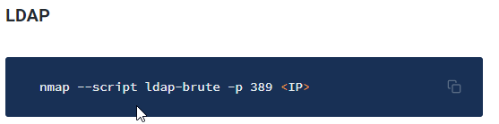

Using ldapsearch to
enumerate
a Windows domain enumerating Active Directory through LDAP
> ldapsearch -H ldap://<ip>:<port> -x -LLL -s sub -b "DC=<domain>,DC=local"
===========Brute Force===========
